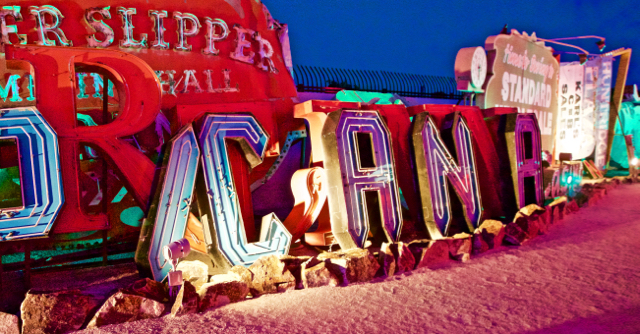
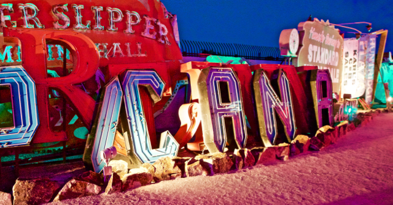

There's no destination. The journey is all that there is, and it can be very, very joyful.
My journey has included:
Responsive
With education and experience I have gained a deep understanding of the importance of responsive design and layout. The same level of understanding how to implement responsive layout grows each day and with each project.
HTML & CSS
The building blocks of front-end development (html) and the magic behind style (css) are of paramount importance to the User Experience on any website. I learn and apply new and exciting techniques with each project, while leaning on the basic principles known throughout the industry.
JS and jQuery
Often 'unseen' but always enjoyed, JavaScript and jQuery enhance the experience that every user has on a webpage and, daily, heightens my awareness and appreciation of UX and UI when designing and building product that ellicit a desire to 'come back' from every visitor.
My Portfolio (to date) includes:
Oh! I like to take pictures, too.
Italy, Spring 2013
Las Vegas, 2015
 

Yellowstone, 2015
Ryan S. Buchholtz
A retired Chief Financial Officer, but recently diagnosed ‘creative-type’, I approach the on-line experience from both the right and left-brain. Originally schooled in Ruby and Rails, I discovered a passion for front-end development and embarked on a self-study adventure to master the many components that contribute to a truly extraordinary user experience through a combination of clean code and an understanding of mathematical beauty.
I learn from both construction and deconstruction and enjoy getting ‘under the hood’ of my favorite websites to see what makes them tick. Though not a designer, I enjoy playing with color palettes to create the most powerful impact – be that in my home or in the digital environment.
An avid writer, I blog about my early retirement, immersion in Las Vegas culture, and am a frequent contributor to TripAdvisor.
In my spare time, there is a good chance you will find me at the nearest airport, maybe plane spotting, but usually embarking on another adventure to a far-flung spot around the world.
Originally from Wyoming, but a New Englander at heart, my husband and I recently relocated to Las Vegas after 15 years in Boston in pursuit of cultural immersion and escape from the snow. Wanderlust is never far from the surface and we are always planning our next trip.